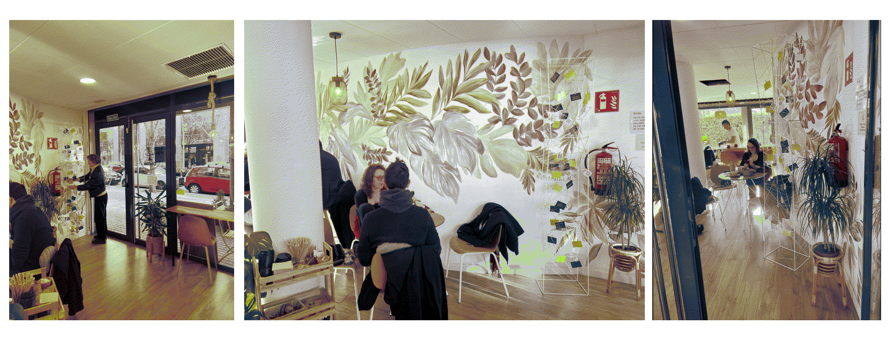

collective interventions¶
plativerse¶
on 09.01.2023. cartographying scar tomico's trial o cohabitate
a plantiversal lexicon for a designer and his journey towards living-with.
it is a monday night, after a day of classes and future talks, we (Myrto and me) are entering the building in which our teacher and mentor Oscar Tomico lives in an apartment on the second floor. we are equipped with cameras and pens and big papers and all kinds of ideas how we will map out the more-than-human interrelationships that we will observe that evening. three hourse later, we leave the building again, not one picture is taken, not one line is drawn, we leave empty headed and with a heavy audio file on our phones.
somehow it feels more natural to sit on the couch among all the green life and exchange thoughts about cohabitation over tea and biscuits. that said, the spaces that could serve as areas for drawing, mapping or moving around are very limited, as plant pots and vases literally take up the entire room. but we soon agree on a kind of interview format for now as it seems very overwhelming to start drawing the relatios at hand when not knowing anything about their pasts and futures. so we listen, ask, take notes, agree and disagree. Oscar shows us every corner of the plant world and the moment I accidentilly touch a hanging branch with bright green leaves, he immediately draws my attention to it.
it is only some time later, that Myrto and me sit in her living room and listen individually to the audio file, now having all the papers and pens in front of us, writing down quotes, point out agents and draw lines and arrows that connect and disconnect. after doing this on our selfs and on our own, we combine it in a digital space (our favorite tool: the miro board).

what will happen next and if there will be a follow up mapping about the possisble futures of how oscar and plants are relating is still in the stars. for now we keep it what it is, a first person observation of a first person perspective on what it meanss to live-with plants.
imaginar mundus possibles in disseny hub¶
on 19.01.2023. presenting our paper on the importance of storytelling
together with Myrto we spend the christmas vacations on reading, writing, rereading and rewriting. after the last design dialogues, myrto and me applied with a simple idea to a complex conference on speculative futures organized by the esbrina research group. its name: imaginar mundos posibles: Potencialidades, límites y fricciones de la ficción especulativa en la investigación y la educación.
the paper we wrote emphasizes the importance of creating and listening to stories in a world where few voices and stories are being noticed. we argue that stories are essential for going beyond monophonic and catastrophic narratives, and that they are a form of “attunement” to the worlds we find ourselves in. we propose a method for diversifying narratives about the future by democratizing storytelling and using speculative fiction as a tool. based on Timothy Morton’s concept of a “mesh”, we propose a mapping technique that creates space for entangled narratives to evolve, encouraging participants to speculate about fictional scenarios that play out in this “web of life”. our presentation at the conference can be watched on youtube

and the paper will soon be published (in an internal publication of the conference) and you can access it here
the conference took place over the course of two full days that were filled with presentations (in castellano and catalan) of other researchers that deal with speculative fiction in the course of design methodologies. it was very interesting to listen to and we got in contact with curious minds and experiences practitioners. on friday afternoon we had the change to meet Yuri Tuma who both, Myrto and me are following due to his participattion in the artist collective the institute for posttnatural studies whose practice we both admire. this two-hour workshop left us enthiusastic about our own practice and with lots of ideas and contacts of how and with whom to continue our journey in the coming weeks.
the traveller start their journey¶
end of january till end of february at Ombu

as part of the design dialogues in december we made a sculpture that wears a lot of questions and QR-codes. the QR-codes lead to a online platform where questionos are (re)framed in a digital way. the attempt is to interact with an open (human) community that expands the bubble we are moving in in our everyday lifes. therefore we aim to reach out to as much voices as possible, the idea is to make this sculpture a traveling work that can venture to multiple places. the first stop is our neighbor-cafe whose owners very soon became our friends, Ombú. we are aware that the chosen questions, cafes, neighborhoods will not crazily deviate from our personap bubble, yet this is a way to prototype our thinking for now.

space for narrating the future of education¶
on 25.03.2023. facilitating a space with myrto
First workshop 25th of February 2023, Barcelona, sun is shining, 10 degreed Celsius.
It is a Saturday morning; we are meeting in the studio of our friend and mentor Jana in Raval.
We have invited for 11 o clock, by 11:30 we are all together, had some tea and fruit and are coming together to stand in a circle. A short introduction round makes us realize the bubble we are in.
Amanda from the States, a MDEF student who is interested in the creation of a makerspace and who loves the self-sufficiency of coding- and electronics. Maria from Italy, who is one of the inviters roommates and works in the social sector with people with disabilities. Nithin from India, who works at Glovo as a UX expert and who is writing his master thesis on speculative-, transition-, and pluriversal design. Korbi from Switzerland, who is a MDEF Master student and concerned with the exploitation of the labor force and the search for new ways to life without work. Georgio from Switzerland, who is his friend and curious to pass by. Daphne from Greece, who is an ex-MDEF student and after finishing a few years ago continued her journey in future design dealing with system and imaginations of speculating. Quim from Spain, who is a geography professor and artist in Lleida and has various practices that deal with the interaction of space and learning processes. Jana from spain, who is an ex-MDEF student and is interested in transhumanistic ways of thinking and designing. Claudia from Italy, who is a MEDF student and is interested in the change of social behavior towards a more conscious consumption of resources. And the two facilitators Myrto and Stella from Greece and Germany, who are MDEF students and interested in disrupting binary thinkings and exploring polyphonic narration. All in all, we are between 24 and 40 years old, white and somewhat linked to the topic of the invitation – the educational system and how it is changing.
Before introducing the topic and goal of the day, we are asked to close our eyes and settle into our body and into the space we are in. A few guided breathings and we open our eyer again to meet each other in concentration and curiousness. The next few hours will be guided along three phases of transition – we will unfamiliarize, grief, and rebirth by the help of three exercises. We will be dealing with a transition that is happening and that we all have experienced somehow close or far – the switch from solely in-person learning and teaching to hybrid forms that come with the introduction of the internet and globally accessible platforms that enable online and live exchanges. We divide into three groups, taking in the perspectives of either teachers, students, or means of communication. Within the groups we discuss and dialogue about what the above mentioned transition would mean for our position, what would change practically and how would it affect our position emotionally?
After about half an hour, we meet with the other groups in a standing circle and each group presents its burning issues. A discussion starts to evolve. It seems difficult to argue from the group’s perspective and participants often appeal to their personal interests. For example, does Quim, who choose to represent means of communication, easily fall back into his actual role as a university professor and argues for the perspectives of the teacher. For the students, who all were students at one point in their lives (in this case not even very long ago and mostly still are), the participants refer to lived experiences. A discussion about the differences in legal regulation and the lack of digital skills arises. Soon all three groups agree on the current goals and deficits, which are not compatible with each other.
We go into the next phase; After having unfamiliarized with what is known by taking in new perspectives and seeing what else there is at play, we continue into the grieving part. In the same groups we are asked to discuss what heritage we want to pass on, what essential qualities of the roles should not be forgotten but will eventually be something that is no longer practiced. For this phase the facilitators have calculated less time and after 20 min bring back the circle and we exchange the values we will be missing. This leads to a mapping of all the values that seem essential for learning and teaching, even in a digital future. Here, too, personal experiences, fears and desires are referred to and inspire our thoughts and words.
Someone mentions the potentiality of hybridness and starts drawing a scenario in which these values can be kept while allowing digital spaces to take over (some of) the physical learning places. We are slowly transitioning into the third phase our day – the rebirth. Each on themselves now writes down three scenarios on three different papers without disclosing their headings: one desirable future that’s possible, one undesirable future that’s plausible, and one desirable future that’s impossible. The studio with the low ceiling and the cold windows falls silent. We hear the pens on the paper, the teeth biting lips. When the facilitators announce five more minutes there is revolt, there is need for more time.
Then we come together and place all our scripts face down on the floor in the middle of our standing circle. One by one we pick up a paper and read out loud what is written on it. Then we decide together if this is something we can imagine in a future education system that has made the transition from exclusively personal learning. There is a lot of movement now, we stand still, but there is laughter and discussion about all kinds of related implications. We discard the papers that are not wanted in our model and in this way build up a stack of propositions describing (parts of) an educational system that we would like to learn and teach with. A third stack of papers is the place for all the scripts we are not so enthusiastic about. The ones where we don’t really know whether to give them a chance or discard them straight away.
After three rounds, and many repetitions of readings, the floor in our midst is empty again. It is getting late, and as the participants have to leave at 2pm, we are led again into a closed-eye breathing, to ourselves and the space, before some words of gratitude end the session for the day. People leave slowly, some stay, eat some more fruit and share their experiences.